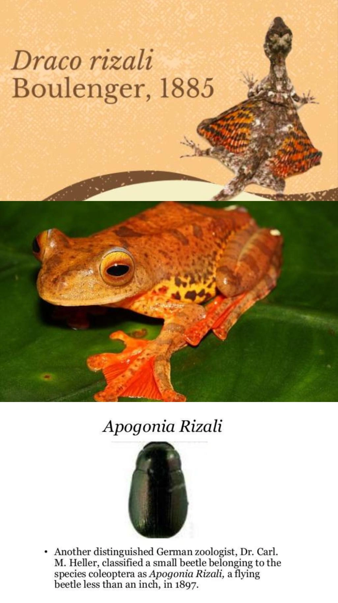
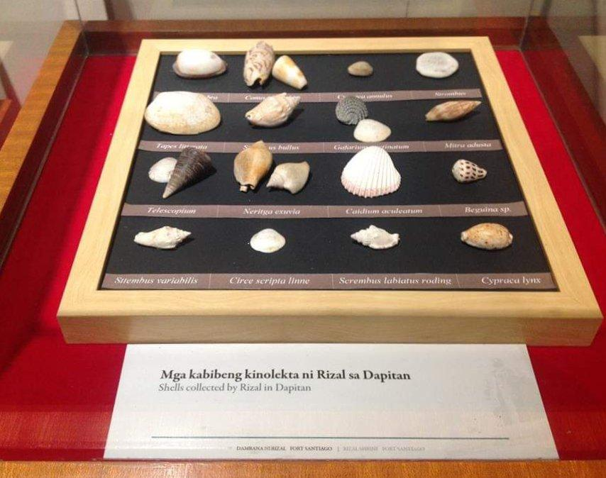
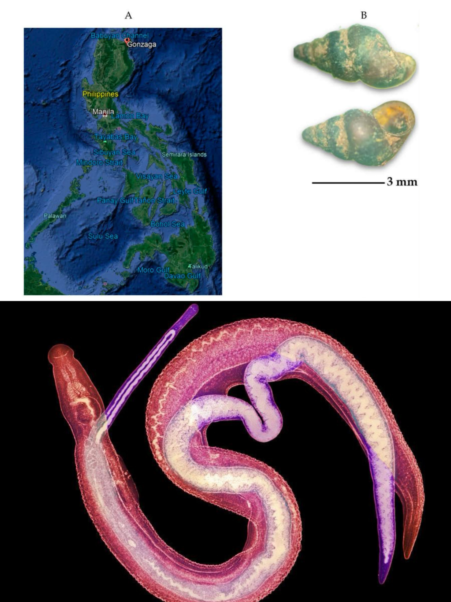
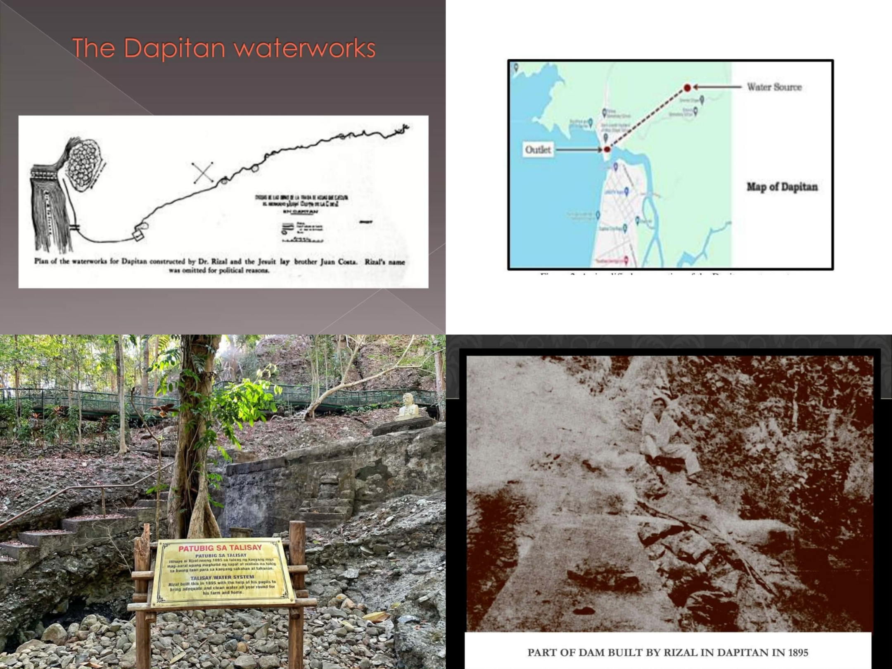
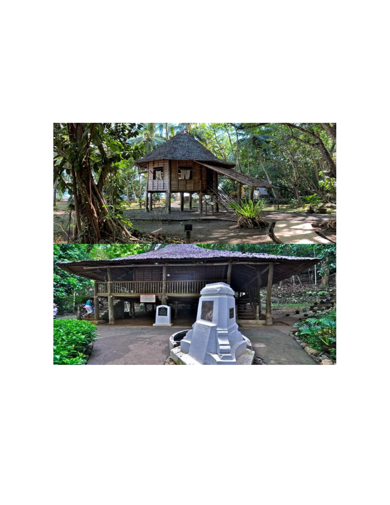
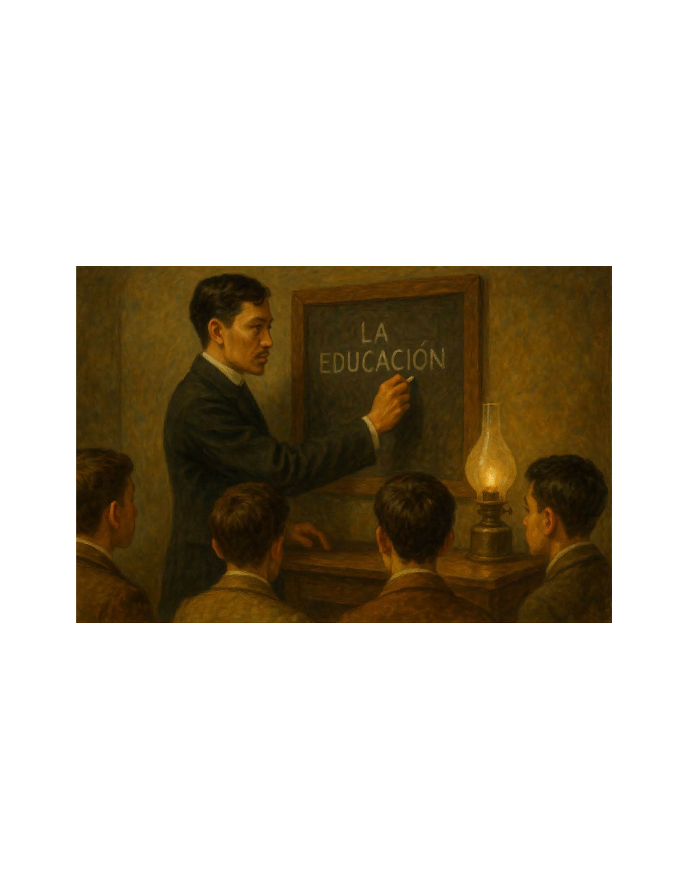

Identify
Identify the major scientific specimens, animal species, and research activities associated with José Rizal during his stay in Dapitan.
Explore the scientific interests, animal specimens, research, and community contributions of José Rizal during his four-year exile in Dapitan. Discover how his curiosity and knowledge became meaningful contributions to science and everyday life.
At the end of this lesson, students are expected to demonstrate their understanding of Rizal's scientific activities and contributions during his exile in Dapitan.
Identify the major scientific specimens, animal species, and research activities associated with José Rizal during his stay in Dapitan.
Explain how Rizal's observations and studies of animals, shells, and other natural specimens contributed to the documentation and understanding of Philippine biodiversity.
Analyze the importance of Rizal's scientific interests and community projects by relating them to the needs and conditions of the people in Dapitan.
Connect Rizal's discoveries and contributions to the development of scientific curiosity, environmental awareness, and community responsibility among learners.
Evaluate the significance of Rizal's work by describing how knowledge and practical skills can be used to address real-life problems.
Express personal insights about the value of observation, research, and service to the community based on Rizal's experiences in Dapitan.
During his exile from 1892 to 1896, Rizal continued studying nature and applying his knowledge to practical concerns. Explore the five topics below and follow the animated arrows to understand their significance and possible benefits.
Rizal's years in Dapitan were not spent doing nothing. He studied the natural environment, gathered specimens, conducted observations, practiced medicine, taught young students, and participated in community development. His activities show how learning can continue even under difficult circumstances.
Click each numbered topic to reveal its explanation. Follow the arrows to see how the activity or discovery connects to scientific knowledge and the people of Dapitan.
Exploring the wildlife and biodiversity of Dapitan
During his exile in Dapitan, José Rizal spent time exploring the surrounding forests, rivers, and coastal areas. He observed and collected different kinds of animals, including insects, reptiles, birds, fishes, crustaceans, and other organisms. He carefully examined these specimens and prepared collections that could be studied by other scientists. Rizal also communicated with European scholars, particularly Adolf Bernhard Meyer of the Dresden Museum in Germany. Through this correspondence, he was able to share specimens and contribute observations about the natural life found in the Philippines. His activities demonstrated that scientific research did not always require a large laboratory. Careful observation, documentation, and curiosity were also important parts of scientific work.

His collections represented different groups of animals and organisms found in the environment.
Collecting and labeling specimens provided information that could be examined, compared, and documented by researchers.
The specimens helped increase scientific knowledge about the variety of animal life found in the Philippines, including organisms from the Dapitan area.
By sharing specimens with scholars abroad, Rizal helped connect observations made in the Philippines with the wider scientific community.
Recognizing Rizal's contributions to zoological studies
One of the most interesting parts of Rizal's scientific work in Dapitan was his collection of animal specimens. Some of the specimens he collected became associated with scientific names honoring him. These names were given by scientists who examined and described the specimens. Three well-known examples are Draco rizali, Rhacophorus rizali, and Apogonia rizali. They represent a flying lizard, a frog, and a beetle. Their scientific names became a recognition of Rizal's contribution to the study of Philippine wildlife.

A lizard belonging to a group known for its ability to glide from one tree to another using extended skin membranes. Its name honors Rizal's contribution to natural history.
A frog associated with the tree-frog group. Its scientific name is another recognition connected with Rizal's animal collections and his interest in studying wildlife.
A beetle named in honor of Rizal. This example highlights the importance of collecting and examining even small organisms because insects are part of the diversity of an ecosystem.
The names show that Rizal's work as a naturalist was recognized by scientists beyond the Philippines.
These examples remind learners that different organisms have their own characteristics and roles in nature. Studying them helps people understand and appreciate wildlife.
Rizal's scientific interests demonstrate that Filipinos can contribute to research and the understanding of the natural world.
Observing and classifying shells and other marine specimens
Aside from studying land animals, Rizal also showed interest in marine life and shells found around Dapitan. He gathered different kinds of shells and made observations about their physical characteristics. His work involved identifying, organizing, and documenting specimens, which are important steps in the study of natural history. His interest in shells is connected with conchology, the study of shells of mollusks. Through careful observation, a researcher can compare the shapes, sizes, patterns, and other features of shells. Rizal's notes and collections reflected his effort to understand the variety of organisms found in the coastal environment.

Rizal gathered shell specimens from the coastal environment and kept them for further observation and study.
He examined their visible features, such as their shapes, structures, and differences. These characteristics can help distinguish one kind of shell from another.
He recorded information about the specimens. His work on Philippine shells became part of his broader scientific interests during his years in Dapitan.
Documenting shells helped preserve information about the variety of organisms found in Philippine coastal environments.
Organized observations and collections can serve as references for other researchers who want to compare and study organisms.
Studying shells encourages people to recognize that coastal organisms are part of an ecosystem that deserves attention and protection.
Connecting observations of nature with public health
Rizal's interests were not limited to identifying animals. His work also included observations related to health and the natural environment. One topic associated with his scientific activities involved freshwater snails and parasites. Freshwater snails are important organisms to study because some species can serve as intermediate hosts for parasites that cause diseases. Research into the relationship between organisms and their environment can help scientists understand how certain diseases are transmitted. Rizal's observations and medical knowledge reflected an interest in understanding health concerns through the study of nature. This topic illustrates how scientific observation can connect biology, medicine, and public health.

Observing freshwater snails helps researchers learn about the organisms living in freshwater environments and their relationships with other living things.
Some freshwater snails are involved in the life cycles of parasites. Studying these relationships helps explain how certain diseases can spread.
Knowledge of organisms and parasites can help medical researchers and public health workers better understand health risks in the environment.
Understanding how organisms live in freshwater environments can help people become more aware of possible health concerns connected with water and sanitation.
It demonstrates why researchers should study the connections between organisms, their habitats, and human health instead of looking at each issue separately.
Scientific information about parasites and their hosts can contribute to future research and community education about disease prevention.
Applying knowledge and practical skills to provide water
Aside from his scientific studies, Rizal also participated in a major community project in Dapitan: the development of a waterworks system. Together with Jesuit lay brother Juan Cota, he helped plan a system that brought water from a higher source toward the town using gravity. The project involved practical planning and an understanding of the natural slope of the land. Instead of depending entirely on manual water transport, the system was designed to allow water to flow through channels toward areas where people needed it. This project is an important example of how Rizal applied knowledge and practical skills to respond to a community concern. It also reflects his ability to work with other people in developing a useful public improvement.

The project made use of a water source located at a higher elevation than the areas that needed water.
Rizal and his collaborator helped plan how water could travel from the source toward the town through a system that used gravity.
The project involved constructing the necessary water channels and structures to direct water toward the community.
The waterworks helped bring water closer to parts of the community, making access more convenient for residents.
A more accessible water supply could help residents with everyday needs, including household activities and other practical uses.
The project demonstrated how technical knowledge, planning, and collaboration can be used to improve the living conditions of a community.
Rizal's experiences in Dapitan show that knowledge becomes more meaningful when it is used to understand the world and help others.
Rizal's interest in animals, shells, and the environment shows the importance of asking questions and carefully observing things around us.
His communication with other scholars demonstrates that learning becomes more valuable when ideas and information are shared with others.
His work on the waterworks system shows that knowledge can be applied to address practical problems and improve community life.
Test what you have learned about Rizal's scientific activities and community contributions. Read each question carefully and select the best answer.
Read each question carefully and select the letter of the correct answer. Choose only one answer for each question. Your score will be displayed after you complete all 15 questions.
Click the button below to begin the 15-item challenge.
Can you match the scientific names with their corresponding animals? Choose one scientific name from the left column, then select its correct animal description from the right column.
Directions: Select a scientific name from the left column, then choose its corresponding animal from the right column. Each correct pair will be highlighted. Match all five pairs to complete the activity.
These important dates help us understand the period when Rizal carried out his scientific, educational, medical, and community activities.
He was sent to Dapitan as a political exile and began a new chapter of his life in the town.
During his stay, Rizal studied nature, collected specimens, practiced medicine, taught students, and participated in community development.
Rizal shared specimens and communicated with scholars, including Adolf Bernhard Meyer, about his scientific interests.
Rizal left Dapitan on July 31, 1896, ending his four-year period of exile in the town.
Explore these resources to learn more about Rizal's scientific interests, discoveries, and contributions during his stay in Dapitan.
Rizal's contributions in Dapitan went beyond collecting animal specimens. His curiosity, creativity, and practical knowledge also led him to explore other ways of understanding nature and improving the lives of the people around him.

During his exile, Rizal explored the forests, coastal areas, and surroundings of Dapitan. He observed different forms of wildlife and collected specimens of plants and animals. These activities allowed him to document the biodiversity he encountered and share his observations with scientists abroad.
His work reminds us that scientific learning can begin with curiosity about the environment. By observing and documenting nature, people can develop a better understanding of the organisms living around them.
Rizal did not keep all his collected specimens to himself. He sent samples of animals and other natural materials to European scholars, including Adolf Bernhard Meyer of the Dresden Museum in Germany. Their correspondence helped connect his observations in the Philippines with the work of researchers abroad.
Some specimens became part of scientific studies, and several animal species were eventually named in his honor. This shows how collecting, preserving, and sharing specimens can contribute to the growth of scientific knowledge.

Rizal also used his knowledge in engineering and practical planning to help improve the community. One example was his involvement in the waterworks system of Dapitan, developed with Jesuit lay brother Juan Cota. The system used gravity to transport water from a higher source toward the town.
This project demonstrates that scientific and technical knowledge can be applied to solve everyday problems. It also highlights the importance of cooperation in developing projects that benefit a community.

While living in Dapitan, Rizal established a school where he taught young boys. His lessons included academic subjects as well as practical skills and activities. He encouraged his students to develop discipline, curiosity, and an appreciation for learning.
His experience as a teacher shows that education was another important part of his life in exile. He did not simply gather knowledge for himself; he also shared what he knew with the younger generation.